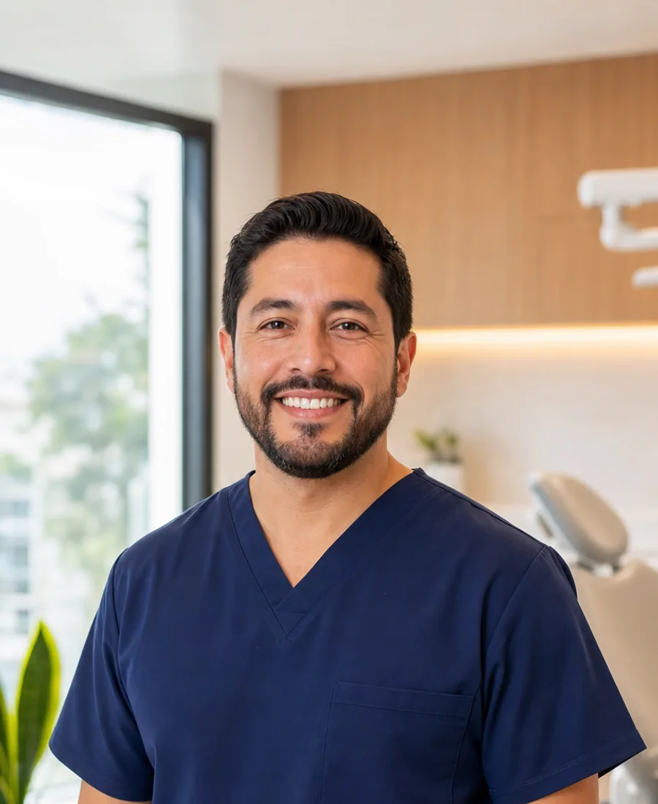
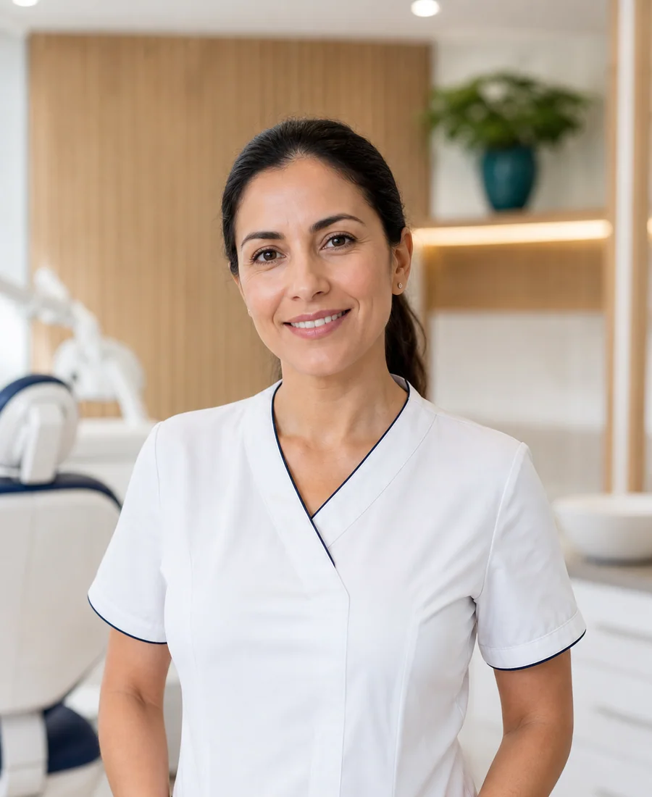
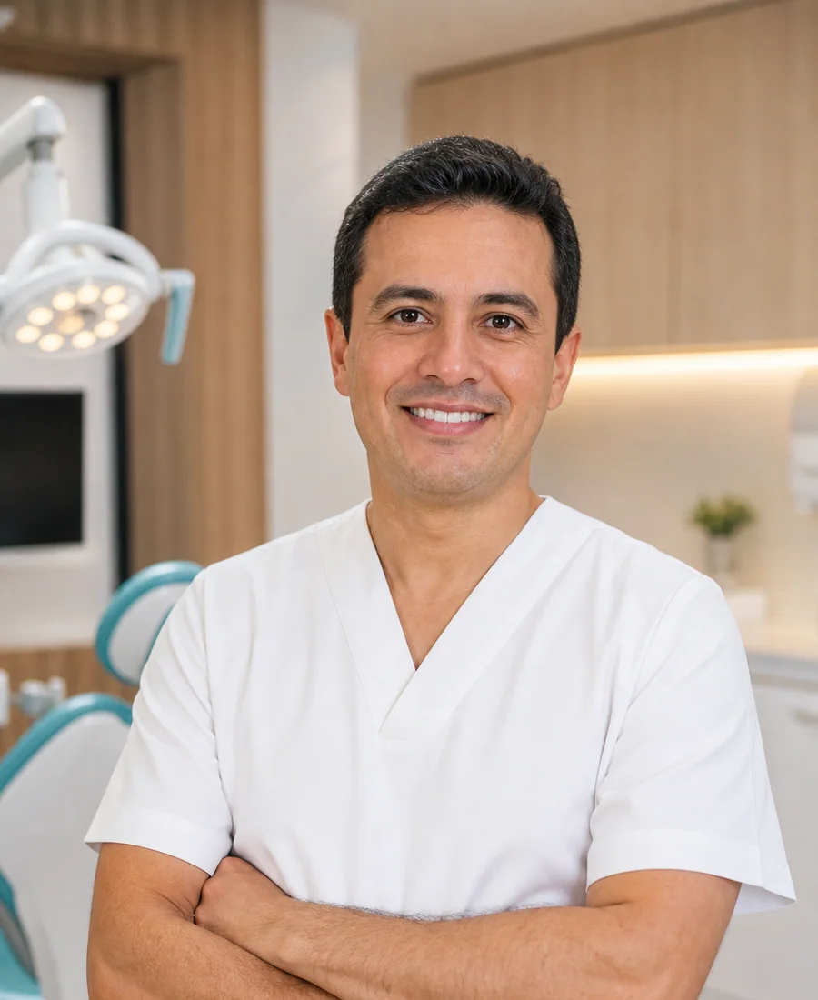
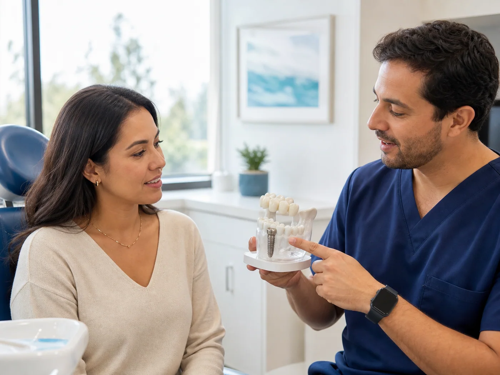
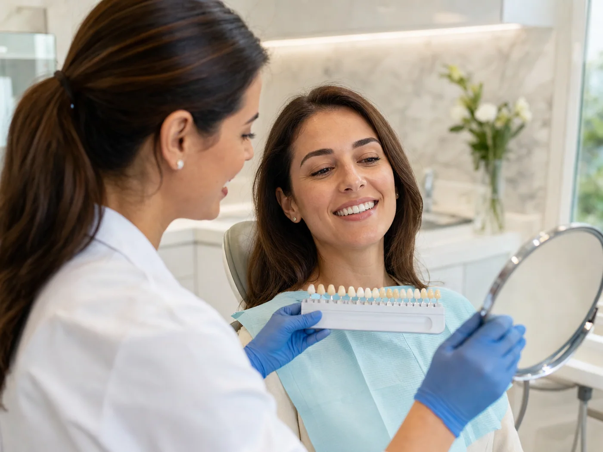
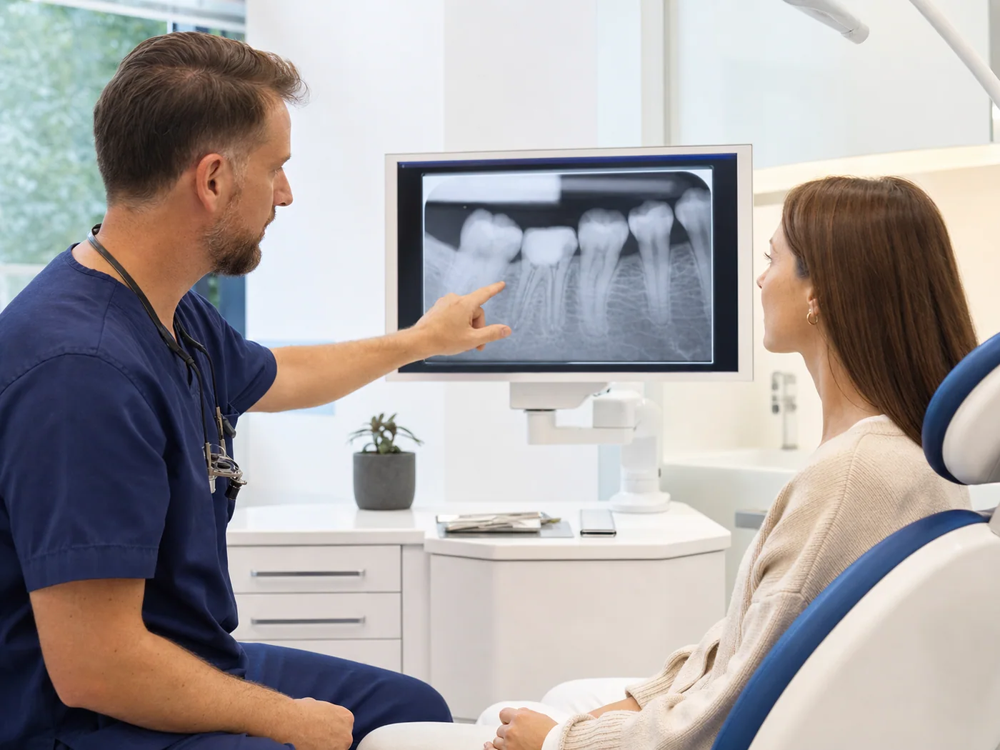
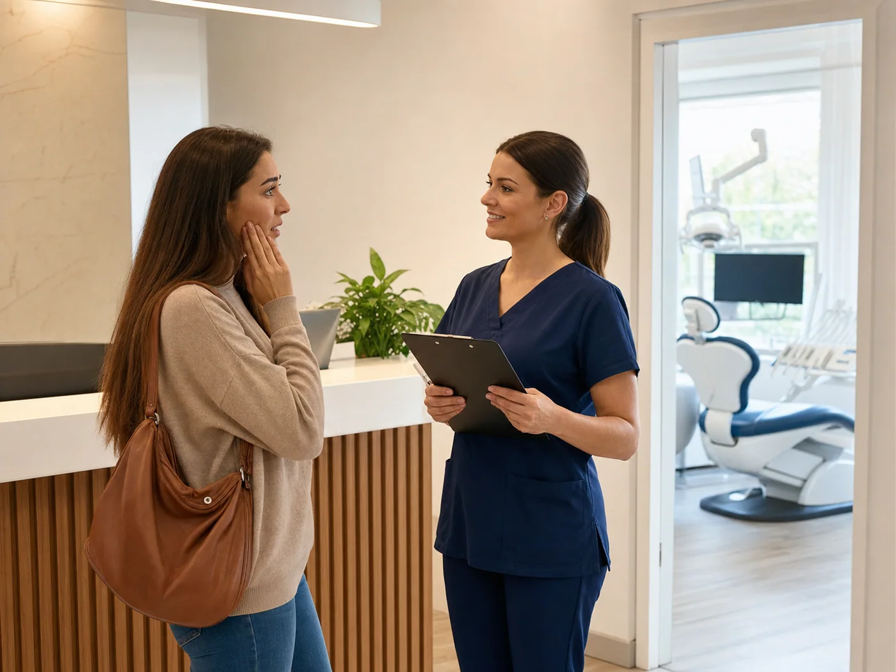
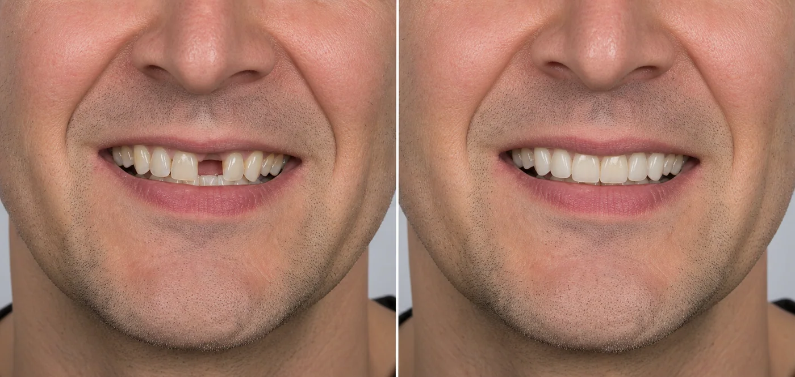

15+ años*
Dr. Cavagna
Implantología OralPlanificación de implantes y rehabilitación oral con un enfoque personalizado.
Implantes dentales, rehabilitación oral, estética dental, endodoncia y urgencias. Atención personalizada en Av. Santa Fe 3069, Ciudad de Buenos Aires.
Odontólogos
Especialización
Atención
Av. Santa Fe 3069
Nuestro equipo combina experiencia, formación continua y atención personalizada para brindar tratamientos de excelencia.

Planificación de implantes y rehabilitación oral con un enfoque personalizado.

Prevención, diagnóstico y tratamientos integrales para cada etapa de la vida.

Diagnóstico y conservación de piezas dentarias con atención cuidadosa.
Tratamientos orientados a lograr sonrisas armónicas, saludables y naturales.
*Imágenes, años de experiencia y perfiles ilustrativos. Reemplazar con la información real del equipo antes de publicar.
Trabajamos con tratamientos modernos, planificación personalizada y materiales de primera calidad.

Reemplazamos piezas dentarias perdidas mediante implantes de alta calidad para devolver función y estética.
En la primera consulta evaluamos tu salud bucal y los estudios necesarios para diseñar un plan personalizado.

Blanqueamientos y tratamientos estéticos para mejorar la apariencia natural de tu sonrisa.
Analizamos tus expectativas y priorizamos resultados naturales que respeten tus rasgos.

Tratamientos para conservar piezas dentarias dañadas y eliminar el dolor.
El objetivo es aliviar el dolor y conservar la pieza siempre que sea posible.

Atención rápida para resolver emergencias odontológicas y aliviar el dolor.
Priorizamos controlar el dolor, evaluar la causa y definir el tratamiento indicado.
Cada tratamiento es planificado de forma personalizada para obtener resultados funcionales y estéticos.

ANTES DESPUÉSExcelente atención desde el primer momento. Muy conforme con el tratamiento.
Paciente GoogleProfesionales muy dedicados y excelente trato humano.
Paciente GoogleVolvería sin dudarlo.
Paciente GoogleEl procedimiento se realiza con anestesia local y la mayoría de los pacientes refiere molestias leves durante la recuperación.
Con una correcta higiene y controles periódicos, un implante puede durar muchos años.
Sí. Evaluaremos tu caso y elaboraremos un plan de tratamiento personalizado.
Sí. El seguimiento es una parte fundamental del tratamiento. Indicamos controles durante la cicatrización y luego visitas periódicas para revisar el implante, la encía, la mordida y la higiene.
Comenzamos con una evaluación clínica. Según el caso, podemos solicitar una radiografía panorámica o una tomografía para analizar el hueso disponible y planificar el tratamiento con precisión.
Estamos en una ubicación céntrica de la Ciudad de Buenos Aires. Podés abrir el mapa, llamarnos o escribirnos directamente.
Av. Santa Fe 3069 · Piso 9, Oficina E
Ciudad Autónoma de Buenos AiresAtención con turno previo
Consultanos por disponibilidad+54 9 11 3393-2597
Escribinos ahora+54 9 11 3393-2597
Tocá para llamarNuestro equipo está listo para asesorarte y ayudarte a encontrar el tratamiento adecuado.
Elegí el motivo de tu consulta. Nuestro equipo te orientará según el tratamiento que necesites.
Recuperá una o más piezas dentarias con un tratamiento personalizado.
Blanqueamientos y tratamientos para mejorar tu sonrisa.
Tratamientos de conducto para conservar tus piezas dentarias.
Si tenés dolor intenso o una urgencia, comunicate inmediatamente.
Controles preventivos y limpiezas profesionales.
Si tu consulta no figura en la lista, escribinos y te ayudaremos.